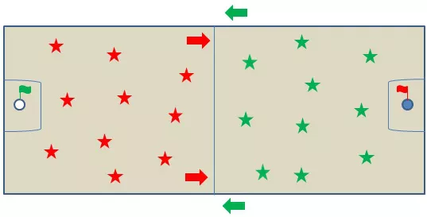

Minha infância
Quando eu era criança, vivia uma vida sem preocupações so queria saber de se divertir, comer e dormir, não tinha responsabilidades!
O que mais marcou minha infância
Na minha infância o que mais me marcou foi as brincadeiras e meus amigos! A brincadeira que eu mais gostava era o pique-banderinha que e uma brincadeira em uma quadra ou ate por marcações feitas na rua e seu objetivo principal e pegar a bandeira do outro time e levar pro seu campo sem ser tocado por nenhum adversario.
